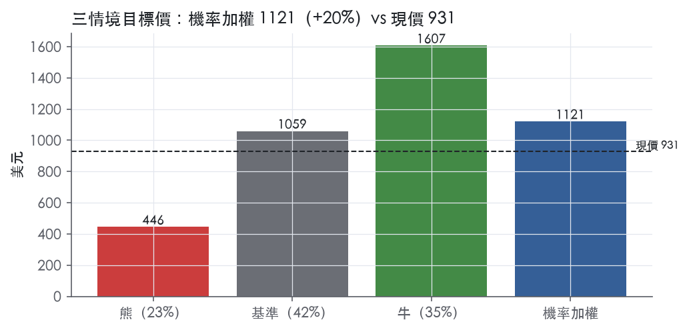
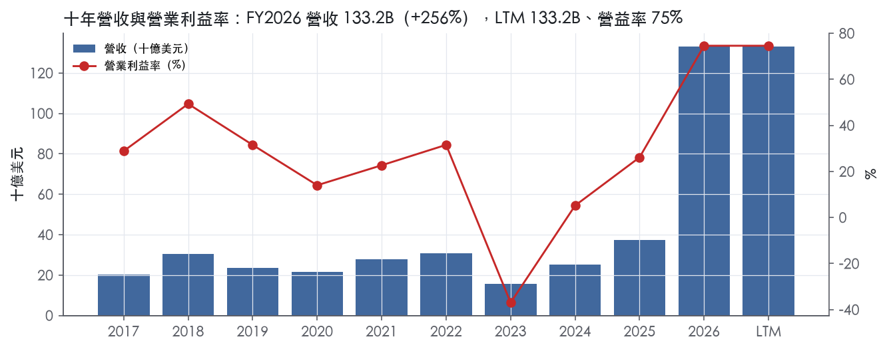
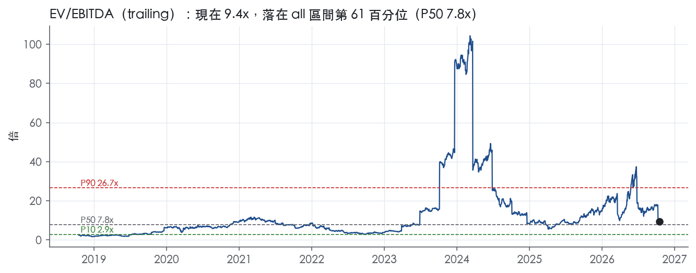
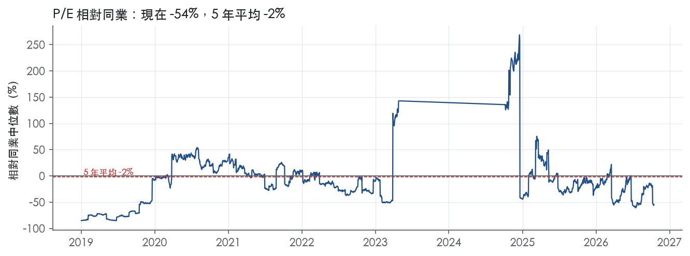
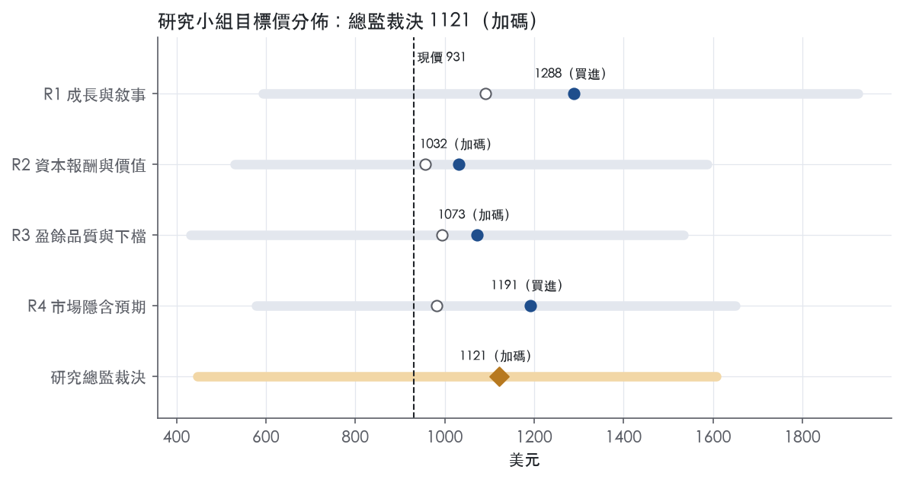
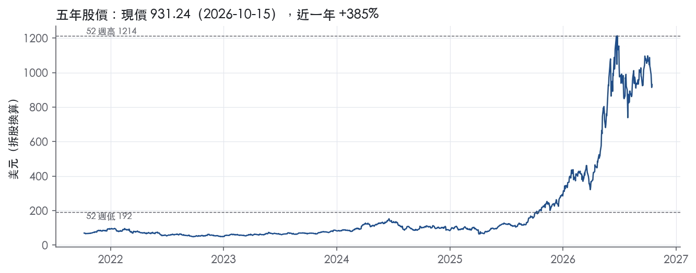

評等總表 › 資訊科技 › MU
營收回落、利潤守住，溫和看多｜評等 加碼｜目標價 1121
| 報告日 | 評等 | 目標價 | 當時股價 | 超額報酬 |
|---|---|---|---|---|
| 2026-10-15 | 加碼 | 1,121 | 931 | +14.9% |
| 2026-09-28 | 中立 | 1,060 | 1,054 | -4.7% |
| 快評 | 動作 | 結論 |
|---|---|---|
| 2026-09-30 | 維持 | 本季營收高於預測23.7%，維持中立 |
| 評等 | 加碼（邊界，鄰近買進） |
| 12 個月目標價 | 1121 美元 |
| 現價 | 931.24 美元（2026-10-15） |
| 預期報酬 | 股價 +20.4%＋股息 0.1%＝總報酬 +20.4%；同業籃門檻 5.5%，超額 +14.9% |
| 估值方法 | EV/EBITDA 8.5x，套在三年平均的EBITDA |
| 三情境 | 熊 446／基準 1059／牛 1607 |
| 研究流程 | 四位研究員兩輪辯論＋研究總監裁決 |
| 資料來源 | SEC EDGAR XBRL、Tiingo、FRED（全免費） |
營收回落、利潤守住，溫和看多（研究總監裁決，四位研究員兩輪辯論後）
評等 加碼（邊界，鄰近買進）｜12 個月目標價 1121 美元（總監三情境機率加權 1110 與研究員中位數 1132 各半）｜現價 931.24（2026-10-15）
預期報酬：股價 +20.4%＋股息 0.1%＝總報酬 +20.4%。同業籃門檻 5.5%，超額 +14.9%，離買進的分界不到三個百分點，屬邊界評等（落在其他級距的機率約五成）。
估值方法：EV/EBITDA 8.5x，套在三年平均的EBITDA。三情境：熊 446（23%）／基準 1059（42%）／牛 1607（35%）。
什麼會讓研究總監改變看法：FQ2-27 指引中值低於指引區間下緣（8-K：61.5B±1.5B）且客戶合約負債轉減，我轉中性並把熊機率升到 30% 以上；FY2027 10-K 揭露 SCA 價格下限覆蓋多數 DRAM 位元，我把 y2 上修至 −15%、倍數回 9.0x。
| 過去四季（實際，FY2026Q4） | 未來四季 | 第 5–8 季 | 第 9–12 季 | |
|---|---|---|---|---|
| 營收（B） | 133.2B | 229.1B | 171.8B | 120.3B |
| 營收成長 | 256.3% | 72.0% | -25.0% | -30.0% |
| 營業利益率 | 74.6% | 76.0% | 66.0% | 50.0% |
| EPS（美元） | 74.32 | 128.66 | 82.45 | 43.00 |
| EPS 成長 | 877.3% | 73.1% | -35.9% | -47.8% |
| 每股股息（美元） | 0.53 | 0.53 | 0.53 | 0.53 |
| P/E（現價） | 12.5x | 7.2x | 11.3x | 21.7x |
| 股息殖利率（現價） | 0.1% | 0.1% | 0.1% | 0.1% |
過去四季為申報數字；預測為研究總監的假設、程式計算。倍數與殖利率都用現價計算，用來看現價對應各期獲利的高低。
| 項目 | 上次（2026-09-29） | 這次（2026-10-16） | 變動 |
|---|---|---|---|
| 評等 | 中立 | 加碼 | 變動 |
| 機率加權目標價（美元） | 1,060 | 1,121 | +5.8% |
| 超額報酬 | -4.7% | 14.9% | +19.6 pp |
| 目標倍數 | 10.5x | 8.5x | — |
| 未來四季營收成長 | 110.0% | 72.0% | -38.0 pp |
| 未來四季營益率 | 78.0% | 76.0% | -2.0 pp |
| 未來四季 EPS（美元） | 109.21 | 128.66 | +17.8% |
| 熊／基準／牛機率 | 30／50／20 | 23／42／35 | — |
程式計算；「未來四季」各自從當次報告的資料起點算。研究總監逐點說明見第八章「與上次報告比較」。
| 情境 | 機率（歷史） | 故事 | 未來四季營收成長 | 第 5–8 季營益率 | 倍數 | 目標價 | 股價漲跌 |
|---|---|---|---|---|---|---|---|
| 熊 | 23%（20%） | FQ2-27 指引季減確認 ASP 反轉、競爭者產能 2027 下半年開出、SCA 下限被重談並含存貨減損；對應風險表第 1 條，由第 3 條觸發 | 45.0% | 38.0% | 6.0x | 446 | -52.1% |
| 基準 | 42%（45%） | FQ1–FQ2 高原、FQ3-27 起 ASP 回落兩年、成本隨位元與折舊上升但不翻倍，y3 營益率仍高於十年中位 | 72.0% | 66.0% | 8.5x | 1059 | 13.8% |
| 牛 | 35%（35%） | SCA 延伸至 2028 位元、HBM4E 2027 放量，FQ1 指引水準成全年高原，下限在 FY2028 下行期守住，倍數回市場現付 | 85.0% | 74.0% | 9.0x | 1607 | 72.6% |
目標價由程式依研究總監的驅動與倍數計算；機率由研究總監給定。括號內是歷史頻率：把這檔股票過去十年 12 個月報酬的波動形狀，置中在基準情境，結果落在各情境附近的比例。

四位研究員用不同方法各自估值，回應研究總監的質疑後交出第二輪，最後由總監逐點裁決。各研究員的主張見第七章，裁決理由見第八章，完整論證見《研究底稿》。
| 立場（一輪→二輪） | 加權目標價（一輪→二輪） | 評等（一輪→二輪） | 第二輪倍數 | 熊～牛目標價 | |
|---|---|---|---|---|---|
| R1 成長與敘事 | 看多→看多 | 1091→1288 | 加碼→買進 | 7.8x | 593～1925 |
| R2 資本報酬與價值 | 看空→中性 | 957→1032 | 中立→加碼 | 8.5x | 530～1587 |
| R3 盈餘品質與下檔 | 中性→看多 | 994→1073 | 中立→加碼 | 7.8x | 432～1534 |
| R4 市場隱含預期 | 看多→看多 | 983→1191 | 中立→買進 | 9.0x | 579～1649 |
| 研究總監裁決 | 看多 | 1121 | 加碼 | 8.5x | 446～1607 |
目標價由程式依各自的驅動與倍數計算；評等＝機率加權總報酬 − 同業籃門檻。
Micron 是一家全球半導體記憶體與儲存領導廠商，產品線涵蓋 DRAM、NAND 與 NOR，供電給 AI 與運算密集應用，從雲端到邊緣裝置¹。公司以自有晶圓廠為主、搭配部分委外製程生產，產品以元件、模組、SSD、managed NAND、多晶片封裝與裸晶（wafer）等形式，透過事業單位賣進資料中心、行動裝置、PC、車用、工業與消費性市場¹。本質上這是一個高度資本密集、價格波動極大的大宗商品型半導體業務，近兩年因 AI 伺服器對 HBM 與高容量 DRAM 的需求暴增，公司從虧損谷底翻轉成史上最賺錢的一年。FY2026 營收 133.19B 美元，較 FY2025 的 37.38B 美元成長 256.3%。
公司依終端市場劃分四個事業單位：Cloud Memory（CMBU）、Core Data Center（CDBU）、Mobile and Client（MCBU）、Automotive and Embedded（AEBU），其中 CMBU 專注大型雲端客戶的記憶體方案與所有資料中心客戶的 HBM，CDBU 專注所有資料中心客戶的儲存方案（SSD、NAND 元件）與 OEM 資料中心、企業及 NeoCloud 客戶的記憶體方案¹。CMBU FY2026 總申報營收 43.09B 美元，FY2025 為 13.52B 美元，FY2024 為 3.79B 美元¹；CDBU FY2026 總申報營收 37.59B 美元，FY2025 為 7.23B 美元，FY2024 為 4.98B 美元¹；MCBU FY2026 總申報營收 36.60B 美元，FY2025 為 11.86B 美元，FY2024 為 11.67B 美元¹；AEBU FY2026 總申報營收 15.89B 美元，FY2025 為 4.75B 美元，FY2024 為 4.63B 美元¹。以產品技術分類，DRAM FY2026 總報導營收 100.68B 美元（含 HBM），FY2025 為 28.58B 美元，FY2024 為 17.60B 美元¹；NAND FY2026 總報導營收 31.79B 美元，FY2025 為 8.50B 美元，FY2024 為 7.23B 美元¹。四個分部中 CMBU 與 CDBU（資料中心＋HBM）合計已占 FY2026 總營收約六成，是成長最快的兩塊。NOR 業務規模在 10-K 未單獨揭露具體營收數字。2026 年公司並宣布退出 Crucial 消費品牌零售業務¹。
公司透過自有直銷團隊、經銷商、零售商與獨立銷售代表銷售產品，並在關鍵客戶附近維持庫存以加速交貨¹。過去三年，前十大客戶合計貢獻約一半總營收，客戶集中度偏高¹。公司與部分客戶簽有「照付不議」（take-or-pay）型態的多年戰略客戶協議，具約束性採購量承諾，且多數定價設有上下限區間，客戶須提供現金存款或信用狀作財務擔保¹。CEO 在 2026 年 Q4 法說中特別強調，這些戰略客戶協議（Strategic Customer Agreements）將顯著提升公司財務表現的「持久性與可預測性」²。生產基地分布於台灣、新加坡、日本、美國、馬來西亞、中國與印度¹；地區銷售分布 10-K 未單獨揭露按國家的營收明細。整體而言公司客戶結構集中在超大規模雲端業者與品牌手機、PC OEM，議價力正隨 AI 記憶體供需吃緊而往 Micron 這端傾斜。
FY2026 Q1（截至 2025-11-27）營收 13.64B 美元，年增 56.7%，毛利率 56.0%，營益率 45.0%（is.revenue、dv.*）。FY2026 Q2（截至 2026-02-26）營收 23.86B 美元，年增 196.3%，毛利率 74.4%，營益率 67.6%；公司在該季財報新聞稿中強調記憶體在 AI 時代的「戰略價值」，並宣布執行多項轉型性戰略客戶協議³。FY2026 Q3（截至 2026-05-28）營收 41.46B 美元，較上季 23.86B 美元、去年同期 9.30B 美元大幅成長，GAAP 淨利 28.24B 美元、每股 24.67 美元，營運現金流 25.39B 美元³；公司對 FQ4-26 指引營收 50.0B±1.0B 美元、毛利率約 86%、每股盈餘 30.73±1.00 美元³。FY2026 Q4（截至 2026-09-03）營收 54.23B 美元，較上季 41.46B 美元、去年同期 11.32B 美元再創新高，GAAP 淨利 37.70B 美元、每股 32.87 美元，營運現金流 43.97B 美元，毛利率 86.8%、營益率 80.7%²；公司對 FQ1-27 指引營收 61.5B±1.5B 美元、毛利率約 85.95%、每股盈餘 37.84±1.00 美元²。四個分部中 CDBU 與 CMBU 的毛利率、營益率在 FY2026 Q4 已攀升至 90%／85% 與 83%／76% 的水準，顯示資料中心與 HBM 相關產品線的規模經濟效益正快速兌現。
CEO Sanjay Mehrotra 表示「AI 正在成為 Super Intelligence（SI），記憶體強化了這種智能以及客戶平台的競爭力」，公司正加碼投資技術、產品與製造以協助推動 SI，而戰略客戶協議則為公司財務表現的持久性提供更高信心²。公司在產品面強調 1γ（1-gamma）節點是首個導入 EUV 微影的 DRAM 節點，良率爬坡順利，FY2026 Q4 大部分 DRAM 位元產出已轉至 1γ 節點¹；HBM4 36GB 12-high 已於 2026 年量產，HBM4E（基於 1γ 技術）開發中，預計 2027 年量產放量，將帶來「又一次階躍式的效能提升」¹。公司並宣布成立 Micron Research Labs，計劃十年內投資約 100 億美元（原文：approximately $10 billion）於記憶體、運算與半導體製造技術的長期研究¹。在雲端與資料中心領域，公司將成長歸因於企業生成式 AI、主權 AI 與工作負載上雲，使伺服器對 DRAM（含 HBM）與 NAND 的需求日益「以記憶體為中心」¹；在行動與邊緣端，公司將成長歸因於 AI PC、旗艦手機與個人 AI 工作站對高容量、低功耗記憶體的需求上升¹。整體看，Micron 的敘事邏輯是製程領先（1γ/EUV）＋HBM 技術卡位＋長約鎖定需求，三者疊加把過去典型的景氣循環型記憶體股，包裝成帶有結構性成長故事的 AI 基礎設施供應商。但這個故事仍建立在記憶體產業史上最強的一次供需缺口之上，一旦 CXMT、YMTC 等競爭者產能開出或 AI 資本支出降溫，獲利率回吐的風險不低。本質上這仍是放大器而非去槓桿後的穩定現金流生意，估值需要對週期位置保持高度警覺。

Micron 評為無護城河，因為我們沒有把握它未來 5 年每年的 ROIC 都能高於資本成本。FY2026 的 ROIC 106.7%來自史上最強的一次記憶體供需缺口，不是結構性定價權。過去 9 年中有 3 年 ROIC 低於 10.2% 的資本成本代理值。最近一次跌破發生在 FY2023 與 FY2024，距今不到三年。HBM 客製化與照付不議長約可能讓護城河變寬，但全產業擴產、中國競爭者有政府資金支持，這兩股力量互相抵銷，所以趨勢定為穩定。
Micron 有真實的成本優勢與初步的轉換成本，但兩者都還不足以讓報酬穿越週期。
成本優勢（製程技術）：公司持續大舉投資自有產品與製程技術，每一代產品通常能提高每片晶圓的位元密度、降低每位元製造成本⁴。公司在 2025 年出貨業界第一個 1γ 量產節點，這也是公司第一個導入 EUV 的 DRAM 節點⁴。2026 年第四季多數 DRAM 位元產出已在 1γ 節點上⁴。但公司自己也承認，競爭者若在新產品或製程技術上更成功，其產品可能取得成本或效能優勢⁴。這代表製程領先每一代都要重新贏回來，不是可以累積的壁壘。
轉換成本（HBM 驗證與長約）：HBM4 的基底邏輯晶粒與 DRAM 核心晶粒都是自行設計與製造，搭配自有的 HBM 設計、封裝與測試能力⁴。公司表示 HBM4E 的客製化選項帶來更多差異化機會，也讓公司與客戶的研發合作更深⁴。公司另與部分客戶簽有照付不議的多年戰略協議，內含具約束力的數量承諾，客戶並提供現金存款與信用狀作擔保⁴。這是 Micron 最接近轉換成本的東西，但多數協議的定價設有上下限區間⁴，部分客戶合約則屬短期⁴。因此長約鎖住的是數量，價格仍隨週期浮動。
無形資產（專利）：公司擁有約 15,500 件有效美國專利與 8,000 件有效外國專利，到期日最晚延至 2045 年⁴。這些專利屬於防禦性資產，Samsung、SK hynix 同樣握有大量組合，專利本身擋不住對手供貨，也撐不起價格。
看不到：十年平均報酬雖然高於資本成本，但波動幅度遠超過任何護城河公司應有的樣子。ROIC 十年平均 25.5%，平均減資本成本 15.3%，帳面上像有護城河。這個平均值被 FY2018 的 54.1%與 FY2026 的 106.7%兩個高峰拉高，ROIC 標準差達 33.3%、最低 -12.1%。
利潤率同樣不穩：毛利率標準差 22.1%，區間從 -9.1% 到 80.7%。營業利益率標準差 27.4%，最低 -37.0%。FY2023 營收衰退 49.5%，自由現金流為 -6.12B 美元。即使在谷底，該年資本支出占營收仍有 49.4%。也就是說，Micron 在最差的年份也得持續砸錢才能留在牌桌上。
我們把平均數與評級之間的衝突照實寫出，最後選擇不採用平均數。理由是評級問的是「每年都高於資本成本」的把握，而 FY2020（7.6%）與 FY2024（1.7%）都在週期正常下行時就跌破了資本成本。
最大的侵蝕力量來自供給端：同業擴產加上中國補貼產能，會把目前的超額報酬壓回資本成本以下。公司指出，部分競爭者有計畫興建新廠或提高既有廠產能，以回應全產業的需求暴增⁴。若全球需求無法維持，平均售價可能大幅下滑⁴。中國政府與國營或關聯實體（例如 CXMT、YMTC）的大量投資，可能造成 DRAM 與 NAND 供過於求⁴。2023 年 5 月中國網信辦禁止關鍵資訊基礎設施營運者採購 Micron 產品，已削弱公司在中國及其他地區的競爭力⁴。
公司也提到，新進者可能對其競爭地位造成重大不利影響⁴。這正是我們不把「效率規模」列為優勢來源的原因：市場並沒有自然地只容得下少數玩家。
需求端同樣有壓力：過去三年前十大客戶約占總營收一半⁴。下行期議價力會快速回到超大規模雲端業者手上。
目標倍數應相對半導體同業折價、與記憶體同業持平，並且要套用在正常化盈餘上，不能套在 FY2026 的高峰盈餘上。目前 trailing P/E 為 12.5x（資料包快照），低於 10 年中位數 17.5x。這是典型的週期股陷阱：高峰盈餘下的低倍數並不便宜。上調至窄護城河、取消折價的觸發條件是：照付不議長約在下一次下行期證明能守住價格下限，而且 ROIC 沒有跌破資本成本。
| 指標 | 最新 | 十年平均 | 標準差 | 最低 | 最高 |
|---|---|---|---|---|---|
| ROIC | 106.7% | 25.5% | 33.3% | -12.1% | 106.7% |
| 毛利率 | 80.7% | 39.3% | 22.1% | -9.1% | 80.7% |
| 營業利益率 | 74.6% | 24.7% | 27.4% | -37.0% | 74.6% |
| FCF 利潤率 | 44.3% | 8.9% | 20.5% | -39.4% | 44.3% |
| ROE | 88.3% | 23.2% | 28.7% | -12.4% | 88.3% |
程式計算。資本成本代理值（10 年債＋5%）：10.2%；ROIC 平均減資本成本：15.3%；ROIC 有資料的 9 年中，高於資本成本 6 年。
LTM 營業現金流／淨利 1.06x、應計比率 -2.9%，兩項核心指標都是綠燈，顯示帳上淨利有現金流撐著，不是純會計數字堆出來的。但應收帳款成長比營收成長快 88 個百分點是程式紅旗中唯一真正需要解釋的項目，且 FCF／淨利僅 0.69x（黃燈），代表資本支出與營運資金膨脹正在吃掉一部分現金轉換。整體評級給「中」而非「高」，因為這次盈餘爆發的規模與速度（營收年增 256.3%、EPS 由 7.59 跳到 74.32）史無前例，品質尚可但波動度極高，不應直接線性外推。
LTM 營業現金流 89.67B 對淨利 84.97B，比率 1.06x，現金是跟上的（8-K 2026-09-30）。FY2026 全年 CFO 89.68B、淨利 84.97B，兩者同步放大，不是靠應計堆出來的紙上富貴²。FY2026Q4 單季 CFO 43.97B 大於淨利 37.70B，現金流品質在最強的一季反而更扎實²。FCF／淨利僅 0.69x（近三年均值僅 0.35x），主因是資本支出同步暴增，FY2026 資本支出／營收 23.1%，FY2026 全年投資性資本支出淨額為 27.37B²。應計比率十年平均 -10.5%、近三年平均 -8.9%、LTM -2.9%，長期為負值且本期仍為負，代表淨利持續「小於」應計推算基準，現金實際優於帳列淨利，這點對品質是正面訊號，不是紅旗。
FY2026 全年 GAAP 淨利 84,969M、每股 74.33，非 GAAP 淨利 86,758M、每股 75.52，差距約 1,789M²。FQ4-26 單季差距更明顯：GAAP 營業利益 43,751M vs 非 GAAP 44,636M，GAAP 營業費用 3,296M vs 非 GAAP 2,568M，差額 728M，推斷主要來自股權薪酬與其他一次性營業費用項目，新聞稿未逐項列出明細金額，僅以彙總方式呈現²。毛利率調整幅度很小，GAAP 86.8% vs 非 GAAP 87.0%（FQ4-26），GAAP 80.7% vs 非 GAAP 81.1%（FY-26），顯示毛利端幾乎沒有「洗」出來的非經常性項目，調整主要集中在營業費用線²。考量 SBC／營收 LTM 僅 1.0%（十年平均 1.8%，近三年平均 2.3%，皆綠燈），本公司非 GAAP 調整規模相對其千億級營收而言非常輕微，GAAP 數字本身就已經接近「乾淨」盈餘，不需要大幅打折。真實成本評估：新聞稿未拆分重組或攤銷細項金額，無法逐項確認何者為一次性，但從調整金額占營業利益比重（728M／43,751M 約個位數百分比）看，即使全數視為真實成本，對估值影響有限。
淨負債由 FY2025Q4 的正值轉為 FY2026Q4 淨現金 -38.26B，資產負債表大幅去槓桿。現金及約當現金從 9,642M（FY2025Q4）增至 38,364M（FY2026Q4），長期有價投資由 1,629M 增至 30,019M，總現金性資產暴增，同時長期負債由 14,017M 降至 4,688M，當期負債由 560M 降至 491M²。股東權益由 54,165M 增至 138,378M，主要由保留盈餘 48,583M 增至 131,851M 驅動，顯示權益增長主要來自盈餘留存而非股票發行稀釋（普通股僅由 127M 增至 128M）²。淨負債／EBITDA LTM -0.35x、利息保障倍數 937.2x，槓桿與付息能力完全不是問題。稀釋股數年變動 -0.2%，回購持續淨減少股數；（股利＋回購）／淨利 LTM 僅 1.5%（黃燈，遠低於 50% 門檻），代表公司在超額盈餘年度選擇保留現金、加碼資本支出與建立現金儲備，而非大幅回饋股東，這是在為下一波 HBM／資本支出週期儲備彈藥，不是股東回饋能力不足（8-K 2026-09-30 資本支出揭露）。公司新增一筆 Noncurrent customer contract liabilities 由 142M（FY2025Q4）暴增至 12,895M（FY2026Q4），對應 10-K 揭露的「strategic customer agreements」客戶預付款與保證金機制，屬於戰略客戶協議下的財務安排，非傳統負債風險⁴。
應收帳款成長比營收快 88 個百分點（FY2026）：真問題但可解釋為規模效應下的時間差，非盈餘操縱。應收帳款由 9,265M（FY2025Q4）增至 36,197M（FY2026Q4），增幅遠超營收年增 379.3%（FQ4 年增）²。在營收從 11,315M 暴增至 54,229M（單季年增近 4 倍）的情況下，應收帳款天數自然會先於現金收款入帳膨脹，這是高速成長期的正常營運資金擴張，而非認列假營收，且現金轉換比率（CFO／淨利 1.06x）同期仍維持健康，佐證盈餘本身無虛增。但這是需要持續追蹤的項目，若下一季營收增速趨緩而應收帳款仍維持高位，則需重新評估客戶付款紀律。
淨利率逐年跳動（FY2017→FY2026 多次 ±14～66pp）：全部是記憶體產業景氣循環造成的真實波動，不是會計調整的假警報。FY2022→FY2023 營益率由 31.5% 崩至 -37.0%，對應 10-K 揭露的產業下行周期（DRAM／NAND 價格崩跌），FY2023→FY2024→FY2025→FY2026 則是 AI 需求驅動的連續復甦與加速，FY2026 營益率達 74.6%，CMBU（雲端記憶體）營收由 3.79B（FY2024）暴增至 43.09B（FY2026），HBM4 量產與策略客戶協議是主要驅動⁴。這是記憶體這個強週期產業的本質，波動本身就是產業特徵而非盈餘品質問題，但代表 FY2026 的利潤率水準（營益率 74.6%、毛利率 80.7%）處於歷史高點，不具持續性，估值不能按當期利潤率線性外推。
存貨成長 -232.2pp：綠燈，非紅旗，營收成長遠快於存貨成長，顯示產品供不應求、無庫存堆積風險，是本期最正面的訊號之一。
估值應以 GAAP 數字為主要基準，因為 GAAP 與非 GAAP 差距很小（FY-26 每股僅差 1.19 美元），非 GAAP 調整不構成重大盈餘品質問題。但 FY2026 的利潤率與 EPS 水準是本輪 AI/HBM 需求與記憶體價格上行週期的高點，trailing P/E 12.5x 看起來便宜，但分母（EPS 74.33）本身可能處於週期峰值，估值應對「持續性」打折而非對「真實性」打折——即不是懷疑盈餘造假，而是懷疑這個利潤率能否維持到下一個週期低谷。槓桿端完全無限制，淨現金 38.26B、利息保障 937.2x，資產負債表強勁到足以支撐在下行周期維持資本支出與股東回饋，不構成倍數壓抑因子。
| 項目 | LTM | 近三年 | 十年 | 燈號 | 規則 |
|---|---|---|---|---|---|
| 營業現金流／淨利 | 1.06x | 4.68x | 2.57x | 綠 | ≥1.00x 綠、<0.80x 紅 |
| 自由現金流／淨利 | 0.69x | 0.35x | 0.47x | 黃 | ≥0.90x 綠、<0.60x 紅 |
| 應計比率（(淨利−CFO)／平均總資產） | -2.9% | -8.9% | -10.5% | 綠 | ≤0.0% 綠、>5.0% 紅 |
| SBC／營收 | 1.0% | 2.3% | 1.8% | 綠 | ≤3.0% 綠、>8.0% 紅 |
| 淨負債／EBITDA | -0.35x | 0.16x | 0.22x | 綠 | ≤1.50x 綠、>3.00x 紅 |
| 利息保障倍數（營業利益／利息） | 937.2x | 320.0x | 115.8x | 綠 | ≥8.00x 綠、<3.00x 紅 |
| 稀釋股數年變動 | -0.2% | 1.5% | -0.0% | 綠 | ≤0.0% 綠、>3.0% 紅 |
| （股利＋回購）／淨利 | 1.5% | 37.4% | 20.1% | 黃 | ≥50.0% 綠、<0.0% 紅 |
| 應收帳款成長 − 營收成長（FY2026） | +87.5pp | — | — | 紅 | ≤5pp 綠、>15pp 紅 |
| 存貨成長 − 營收成長（FY2026） | -232.2pp | — | — | 綠 | ≤5pp 綠、>15pp 紅 |
程式計算；燈號以 LTM（無則近三年平均）判定。
| 風險 | 觸發指標（看什麼數字、在哪裡看） | 對 EPS 的影響方向與粗略幅度 | 未來 12 個月發生機率 | 出處 |
|---|---|---|---|---|
| 1. ASP／毛利率週期反轉 | 每季毛利率（10-Q/8-K 揭露）、DRAM/NAND 現貨與合約價指數、存貨天數 | 負向、大：FY2023 毛利率曾轉為 -9.1%、營益率 -37.0%，EPS 轉負 -5.34 | 高 | ⁵＋ |
| 2. 大型雲端客戶資本支出降溫／客戶集中度 | 前十大客戶佔營收比重（10-K Note 21）、主要雲端客戶季度資本支出指引 | 負向、大：近三年前十大客戶合計約佔總營收一半 | 中 | 10-K 年報 FY2025 Item 1（業務） |
| 3. 競爭者產能開出導致供過於求 | CXMT／YMTC／三星／SK hynix 資本支出與擴產公告、公司自身資本支出/營收比 | 負向、中大：公司 FY2026 資本支出/營收 23.1%，FY2023 高達 49.4%時對應虧損年（is.*、FY2026） | 中 | 10-K 年報 FY2026 Item 1A（風險因素） |
| 4. 台灣集中生產的地緣政治風險 | 台灣相關地緣政治事件、公司台灣產能占比揭露 | 負向、大但難估幅度：2026 年多數 DRAM 產出來自台灣晶圓廠 | 低 | 10-K 年報 FY2026 Item 1A（風險因素） |
| 5. 中國監管／出口管制擴大 | CAC／BIS 新公告、公司揭露的中國區收入變化 | 負向、中：2023 年 CAC 禁令已造成中國區營收衝擊（未提供具體金額） | 中 | 10-K 年報 FY2026 Item 1A（風險因素） |
風險一：ASP／毛利率週期反轉。 公司自己揭露過去五年 DRAM、NAND 年度平均售價變動幅度從上漲約 200% 到下跌約 50%⁵，且明確表示製造成本中有很大一部分是固定成本，產能利用率下滑會直接推高單位成本、侵蝕毛利⁵。資料包顯示這不是空話：FY2023 毛利率曾轉為 -9.1%、營益率 -37.0%、淨利 -5.83B、EPS -5.34，而 FY2026 毛利率已衝到 80.7%、FY2026Q4 單季毛利率 86.8%。觸發指標很具體：看每季財報揭露的毛利率趨勢、各業務單位（CMBU/CDBU/MCBU/AEBU）的毛利率是否開始滑落，以及公開的 DRAM/NAND 現貨價指數。這是五條裡機率與幅度乘積最大的一條。
風險二：大型雲端客戶資本支出降溫／客戶集中度。 業務概況章指出過去三年前十大客戶合計貢獻約一半總營收¹，且公司與部分客戶簽有「照付不議」型態的戰略客戶協議¹。這類長約在景氣上行時是穩定器，但若某個或多個超大規模雲端客戶自建記憶體採購策略、調整 AI 資本支出節奏，對集中度如此高的客戶結構衝擊會直接反映在營收上。觸發指標是 10-K Note 21 每年更新的客戶集中度數字，以及主要雲端客戶自己公告的資本支出指引。目前沒有具體的客戶名稱或百分比可引用超過「約一半」這個數字，幅度判斷只能定性為「大」。
風險三：競爭者產能開出導致供過於求。 公司在風險因子中明確列出中國國家支持的 CXMT、YMTC 等競爭者持續投資擴產，且「我們與部分競爭者皆有計畫新建晶圓廠或在現有廠擴產以回應需求大增」，若全球需求不如預期增加或維持，平均售價可能「大幅下滑」⁵。資料包顯示資本支出/營收比在虧損年（FY2023 49.4%）與獲利年（FY2026 23.1%）之間波動劇烈（FY2026），本身就是一個可觀測的領先指標：若全行業資本支出/營收比在未來幾季持續攀升而需求指標未跟上，代表供給端正在堆積。機率定為中，因為目前 AI 需求仍強，但競爭者擴產週期通常落後需求 12-18 個月，正好卡在未來一年的觀察窗內。
風險四：台灣集中生產的地緣政治風險。 10-K 直接寫明「2026 年公司大部分 DRAM 產出來自台灣晶圓廠，任何產出損失都可能對公司造成重大不利影響」⁵，且台灣是整個科技產業供應鏈的核心節點，政治、經濟或其他行動不僅影響公司本身，也會波及客戶與整個供應鏈⁵。這條風險無法用財報數字提前監測，只能靠地緣政治事件本身作為觸發指標，機率定為低但一旦發生衝擊會是結構性的（大部分 DRAM 產能瞬間受限），因此仍須列入前五。
風險五：中國監管／出口管制擴大。 2023 年 5 月 CAC 已裁定中國境內關鍵信息基礎設施運營商不得採購 Micron 產品，已實際衝擊公司在中國大陸與香港的直接與間接（經銷商）銷售⁵。10-K 同時提到美國政府持續限制美國公司對特定客戶銷售產品與軟體的權利，未來可能擴及其他重要客戶⁵。公司未揭露具體的中國區營收金額或占比，因此 EPS 影響幅度只能定性為「中」。觸發指標是 CAC／BIS 任何新公告，以及未來財報若揭露中國區營收變化。
現價 931.24 對應 trailing（過去四季）P/E 12.5x、EV/EBITDA 9.3x、EV/EBITA 10.2x、EV/Sales 7.6x、FCF 殖利率 5.6%。主要估值倍數 EV/EBITDA 現在 9.4x，落在all區間第 61 百分位（P10／P50／P90 = 2.9x／7.8x／26.7x）。

把程式的機械基準預測放到現價下，市場付的前瞻倍數是：EV/EBITDA（未來四季） 8.1x、P/E（未來四季） 11.3x、EV/EBITDA（第 5–8 季） 8.6x、P/E（第 5–8 季） 12.6x。反推 DCF 顯示市價隱含未來五年營收年成長 36.1%（WACC 9.0%、終值成長 3.0%、FCF 利潤率 7.5%，SBC 不加回）。
| 倍數 | 現在 | all P10 | all P50 | all P90 | 現在分位 | 全期 P50 |
|---|---|---|---|---|---|---|
| P/E | 12.5x | 4.6x | 17.5x | 33.8x | 40.6% | 17.5x |
| EV/EBITDA | 9.4x | 2.9x | 7.8x | 26.7x | 60.6% | 7.8x |
| EV/EBITA | 10.3x | 4.1x | 15.0x | 30.2x | 38.8% | 15.0x |
| EV/EBIT | 10.3x | 4.1x | 15.2x | 30.2x | 38.8% | 15.2x |
| EV/Sales | 7.7x | 1.8x | 3.1x | 7.7x | 89.8% | 3.1x |
| P/S | 8.0x | 1.8x | 3.1x | 7.6x | 91.3% | 3.1x |
| P/FCF | 18.1x | 6.3x | 48.9x | 196.2x | 28.3% | 48.9x |
trailing 倍數（股價 ÷ 過去四季）；分位以每個交易日計算。
同業籃：WDC, STX, SNDK, INTC, TXN, NVDA（手動名單（playbooks/peers.yaml））。評等門檻 5.5%：同業「倍數不變下持有一年」的隱含報酬中位數（＝ FCF 殖利率 ×(1＋g)＋g，g 為 5 年營收年複合成長並夾在 −2%～8%），每家夾在 0～15%、P/E 低於 5 倍視為資料可疑而排除，中位數再限制在 10 年債到 10 年債＋5% 之間。
| 代號 | 市值 | 5 年營收 CAGR | 營益率 | ROIC | P/E | 5 年 P/E 中位數 | EV/EBITDA | P/FCF | 隱含報酬 |
|---|---|---|---|---|---|---|---|---|---|
| MU | 1,053.2B | 36.9% | 74.6% | 106.7% | 12.5x | — | 9.3x | 17.9x | 14.0% |
| WDC | 128.7B | -5.3% | 34.5% | 52.2% | 14.6x | — | 26.5x | 36.7x | 0.7% |
| STX | 156.7B | 2.7% | 33.6% | 92.0% | 49.5x | — | 36.3x | 50.5x | 4.7% |
| SNDK | 203.6B | 49.3% | 61.2% | 105.9% | 19.0x | — | 15.9x | 17.7x | 14.1% |
| INTC | 481.0B | -7.5% | -0.1% | -1.1% | — | — | 40.8x | 169.9x | -1.4% |
| TXN | 256.8B | 4.1% | 37.3% | 21.8% | 42.5x | 27.3x | 28.1x | 48.0x | 6.3% |
| NVDA | 5,275.4B | 66.9% | 65.2% | 110.8% | 27.5x | 57.4x | 26.3x | 41.5x | 10.6% |
| 同業中位數 | 3.4% | 35.9% | 72.1% | 27.5x | 42.3x | 27.3x | 44.7x | 5.5% |
全部 trailing，程式以各公司 SEC XBRL 與 Tiingo 行情計算；第一列為本檔。
P/E 相對同業中位數：現在 -54.4%，過去 1 年平均 -25.3%、3 年 5.3%、5 年 -1.7%；EV/EBITDA 相對同業中位數：現在 -66.5%，過去 1 年平均 -46.1%、3 年 -27.7%、5 年 -37.5%。

程式的機械基準（成長率從過去四季年增率三年收斂到 6%、利潤率持平）用 EV/EBITDA all P50（trailing） 估值得到 825（-11.4%），用現行倍數得到 974。這兩個數字只是參考點，不是本報告的目標價；研究員對這個定價的回應在第七章。
下表是每位研究員第一輪（各自獨立）與第二輪（回應研究總監的質疑後）的結果。目標價全由程式依各自的假設計算。
| 立場（一輪→二輪） | 加權目標價（一輪→二輪） | 評等（一輪→二輪） | 第二輪倍數 | 熊～牛目標價 | |
|---|---|---|---|---|---|
| R1 成長與敘事 | 看多→看多 | 1091→1288 | 加碼→買進 | 7.8x | 593～1925 |
| R2 資本報酬與價值 | 看空→中性 | 957→1032 | 中立→加碼 | 8.5x | 530～1587 |
| R3 盈餘品質與下檔 | 中性→看多 | 994→1073 | 中立→加碼 | 7.8x | 432～1534 |
| R4 市場隱含預期 | 看多→看多 | 983→1191 | 中立→買進 | 9.0x | 579～1649 |
| 研究總監裁決 | 看多 | 1121 | 加碼 | 8.5x | 446～1607 |
目標價由程式依各自的驅動與倍數計算；評等＝機率加權總報酬 − 同業籃門檻。
分歧度：第一輪 加權目標價 957～1091（區間＝現價的 14%）· 倍數 8～8.5x · 立場 看多×2、看空×1、中性×1；第二輪 加權目標價 1032～1288（區間＝現價的 28%）· 倍數 7.8～9x · 立場 看多×3、中性×1。

| 研究員 | 第二輪主張 | 堅持的理由 |
|---|---|---|
| R1 成長與敘事 | 偏多，目標倍數7.8x，第一年營收成長80%。 | 營收四季停在第一季指引水準，低成本基數讓第三年營益率守在55%。 |
| R2 資本報酬與價值 | 中性，目標倍數8.5x，正常化價值接近現價。 | 利潤率向下回歸，第二年營收跌35%，管理層回饋股東少，不給回購溢價。 |
| R3 盈餘品質與下檔 | 溫和偏多，目標倍數7.8x，長約下限尚未經下行期檢驗。 | 倍數不跟同業上調；同業中位數含INTC 40.8x，不能當記憶體的尺。 |
| R4 市場隱含預期 | 看多，目標倍數9.0x，等於市場現付水準。 | 市場付的倍數合理，錯在盈餘預期太低，第三年營益率仍有50%。 |
每位研究員的逐條回應與完整論證見《研究底稿》（MU_研究底稿_2026-10-16.docx）。
| 分歧點 | R1 成長 | R2 價值 | R3 品質 | R4 預期 | 什麼資料會分出勝負 |
|---|---|---|---|---|---|
| ① NTM 營收成長（高原長度） | 80%：四季停在 FQ1 指引 | 72%：FQ2 持平、FQ3–Q4 回落 | 70%：FQ1 見頂 | 70%：FQ1 達標後緩降 | FQ2-27 營收指引中值（2026-12 下旬）對 61.5B |
| ② Q5–Q8 營收成長（ASP 跌幅） | −15%：長約下限 | −35%：接近 FY2023 | −25%：接近 FY2019 | −20% | FQ3／FQ4-27 ASP 方向；FY2027 10-K 的 SCA 價格區間與覆蓋位元 |
| ③ Q9–Q12 營益率（成本機制） | 55% | 35%：減產推高單位成本 | 60%：成本隨位元與折舊溫和升 | 50% | FQ1-27 營業費用對指引約 2.31B；FY2027 D&A 增幅 |
| ④ D&A 比率 | 11%，營益率僅 y1 −2pp | 10%，稱營益率已含 | 7.1%，折舊由營益率承擔 | 9%，營益率未調 | 模型恆等式，不待新資料 |
| ⑤ 目標倍數 | 7.8x all P50 | 8.5x P50＋長約 | 7.8x 淨現金已扣、下限未驗 | 9.0x 市場現付 | 2027 下半年下行期 SCA 價格下限是否守住 |
① 選 R2，72%。 FQ1-27 指引 61.5B±1.5B²已鎖住第一季；非流動客戶合約負債由 142M 增至 12,895M【財務體質章引 8-K 2026-09-30】是數量承諾附擔保的第一個可量化證據，支持 FQ2 至少持平。FQ3–Q4 回落，因為同業擴產通常落後需求 12–18 個月【風險章風險三】，正落在 FY2027 下半年。R1 的 80% 要四季全停在 FQ1 水準，等於下行觸發整年缺席，卻沒有 FQ2 以後任何指引支持；R3／R4 的 70% 隱含 FQ2 已回落，但合約負債暴增發生在 FQ4-26、CEO 也說預期 FY2027 更強²，不支持下一季立刻轉向。FQ4-26 為 14 週、LTM 基期多含一週（R2），用 52 週 NTM 算成長本就偏低，也不利 70%。
② 選 R3，−25%。 歷史下行年 FY2019 −23.0%、FY2020 −8.4%、FY2023 −49.5%（／FY2020／FY2023）。SCA 多數定價設有上下限⁴，把 FY2023 式崩落排除在基準之外；但下限水準未揭露，不能像 R1／R4 那樣假設它接近現價、只跌 15–20%。R2 的 −35% 接近 FY2023，而 FY2023 是終端需求同時去庫存、位元也跌；這次有照付不議的數量承諾⁴，R2 沒有提出下限會失守的證據。
③ 選 R4：y3 營益率 50%，y3 營收 −30%（R1／R2／R4 共識）；y2 營益率 66%（R3／R4 共識）。 機制採三人共識：記憶體營收變動主要來自 ASP、成本大部分固定⁵，FY2026 營益率 74.6%代表成本不到營收三成；成本基數隨位元與折舊上升（R3：FY2018 與 FY2022 營收相近，營益率 49.3% 對 31.5%，／FY2022）；FY2026 淨資本支出 27.37B⁶遠高於 LTM D&A（ltm.ebitda 108.84B 與 ltm.ebita 99.34B 之差），折舊三年內加速。R3 的 60% 沒算進 CEO「加碼投資製造」⁶與 25% 資本支出密度帶來的折舊；R2 的 35% 要靠「減產推高單位成本」，但照付不議數量使大幅減產不是基準情境，他也沒有減產的證據。R4 的 50% 落在 y3 營收回到 FY2026 附近、成本比 FY2026 高七到八成（假設）的組合上，與 FY2018→FY2022 成本基數隨時間成長的歷史一致。
④ 選 R3，7.1%。 模型 EBITDA＝營業利益＋D&A，D&A 比率上調而營益率不等量下調，就是把主尺機械墊高。R1 調到 11% 只在 y1 扣 2pp，y2／y3 營益率反而上調；R4 調到 9% 完全沒扣；R2 稱「營益率已含」，但他的 y2／y3 營益率是用成本機制設的，與 D&A 比率無關。R3 的處理（D&A 回基準、折舊由營益率承擔）是唯一一致的；我在 ③ 選的 66%／50% 已含折舊上升，D&A 不再動。這是 R1、R4 第二輪加權大幅上升（1091→1288、983→1191）的一部分來源。
⑤ 倍數 8.5x，取 R2 的數字，理由部分 own。 錨是全期帶 P50 7.8x。四人一致不用 5 年 P50 11.7x：5 年 P90 40.3x 顯示它被 FY2023 EBITDA 2.01B的谷底分母墊高，我接受，這同時否定上次報告 11.5x 的錨。上調理由：（a）口徑（own）——全期 EV/EBITA P50 15.0x、EV/EBIT P50 15.2x 對 EV/EBITDA P50 7.8x（trailing 倍數帶表），兩組倍數差近一倍，說明帶形成期間 D&A 約佔 EBITDA 一半；LTM EBITDA 108.84B 與 EBITA 99.34B 幾乎相同，同一個 7.8x 套在現在的 EBITDA 上幾乎就是 EV/EBIT 倍數，遠低於歷史 EBIT 中位，這是分母結構變了，不是市場重估。（b）合約負債 12,895M 在帶形成期間不存在（R2、R4）。不到 R4 的 9.0x（零報酬倍數＝市場現付）：三年窗從峰值起算、無谷底年，劇本明說峰值盈餘不配中位數；護城河評「無」、下限未經下行期檢驗【護城河章】；R4 的 9.0x 配 D&A 9% 是雙重偏多。R3 的 7.8x 嚴謹但沒處理口徑。8.5x 恰為 3 年帶 P10，低於現行 9.4x 與零報酬 9.0x；同業折價 −66.5% 不作理由（R3：同業中位含 INTC 40.8x）。交叉驗證：P/E 10 年 P50 17.5x套含峰值的三年平均盈餘違反劇本，程式隱含 P/E(NTM) 落在 10x 上下與峰值折價一致；EV/Sales 10 年 P50 3.1x 與反推 DCF（FCF 率 7.5% 對 LTM 44%）口徑不可比。無人以利率壓倍數，R2 第一輪的利率論點已撤。
漂移與總經偏離。 漂移表無程式旗標；四人第二輪皆遠離第一輪中位數、每條接受意見附證據，沒有「無證據向中位數靠攏」可退回，drift_rejections 為空。R1 G3／G4、R4 E3／E4 的修正方向偏多，是模型處理問題不是漂移，已在 ④ ⑤ 不採。四人 macro_deviations 皆空，R4 牛熊取本行上行／下行路徑合法；本行基準 GDP 1.7（低於官方 2.2）對 MCBU／AEBU 消費端偏空，已含在 y2 −25% 內；總經敏感度 t 值 0.4 不可用。全部接受，macro_deviations: []。
與機械基準不同的驅動（皆為假設）：
目標倍數 8.5x EV/EBITDA 套三年平均（mid-cycle）EBITDA，EV 基準減 NTM 期末淨負債。錨全期 trailing P50 7.8x，因 D&A 口徑與長約擔保上調至 3 年帶 P10 8.5x；不到市場現付 9.0x、不到 5 年 P50 11.7x。期間口徑：trailing 帶配三年平均分母，窗內含一年峰值、無谷底年，不再加溢價；不跟同業中位數調整。
| 情境 | 機率 | 來源 | 營收 y1／y2／y3 | 營益率 y1／y2／y3 | 倍數 |
|---|---|---|---|---|---|
| 牛 | 35% | R4 原封 | 85%／0%／−12% | 80%／74%／65% | 9.0x |
| 基準 | 42% | 總監 | 72%／−25%／−30% | 76%／66%／50% | 8.5x |
| 熊 | 23% | R3，y1 40→45% | 45%／−50%／−30% | 70%／38%／15% | 6.0x，capex 32% |
牛（R4）：SCA 延伸至 2028 位元、HBM4E 2027 放量⁴，FQ1 指引水準成全年高原，下限在 FY2028 下行期守住，觸發護城河章升級條件，倍數回市場現付 9.0x；窗內三年近乎全是峰值分母，不再往上。不取 R1 的牛：y1 95% 要四季持續季增超過 FQ1 指引，無指引支持。
熊（R3）：FQ2-27 指引季減確認 ASP 反轉，Samsung／SK hynix／CXMT 新產能 2027 下半年開出，ASP 比照 FY2023 年跌近半，SCA 下限被重談或不具約束力，含存貨減損；對應風險表第 1 條，由第 3 條觸發。y1 從 40% 微調到 45%：FQ1 已鎖 61.5B，40% 隱含 FQ2 起急跌，R2／R4 熊皆 45%。倍數 6.0x 取 R3：y3 營益率 15% 低於十年中位、窗內已含谷底年，再套全期 P10 2.9x 是重複扣分；低於 P50 的理由取 R4——下限失效使前十大客戶約佔一半營收⁴的集中度被重新定價。
機率：以基準為中位，牛熊距離與 R3／R4 相近，他們的歷史對照落在 33–37／38–45／20–25；置中分布 P75 +41%、P90 +90%、P10 −43%。我給 35／42／23。熊比對照略低：FQ1-27 指引鎖住 NTM 第一季、合約負債附現金擔保，近端分歧收窄（R4）。牛略高：上次報告設定的牛觸發（10-K 揭露 SCA 價格下限）已成立。偏離皆在 10pp 內。牛高於熊，與歷史順序一致、與本部過去 22 份報告相反；MU 這十年 12 個月報酬 73% 為正，從 52 週高點 1213.56 回落的起點不改變這個順序。
市場現付（零報酬倍數 9.0x）配的是基準路徑：營收再成長兩年（+42%、+24%）、營益率三年回到十年中位 27.5%。我們相反：營收 FQ3-27 起回落兩年、營益率回落慢得多（y2 66%、y3 50%），三年平均 EBITDA 因此高於基準。差距在盈餘路徑的形狀——op_margin_y2／y3 這兩個驅動——不在倍數，我們的 8.5x 低於市場現付。立場看多，程式評等預計加碼，一致；若落在中立，差在門檻 5.5% 而非方向。
現價 931.24 → 點估目標價 1059 → 機率加權目標價 1110 → 目標價 1121，差距拆成五段：成長順延 -0 美元（市場現行倍數 9.0x 一年後持平、獲利照機械基準）；倍數差 -44 美元（總監倍數 8.5x vs 市場持平倍數 9.0x，同一機械基準預測）；盈餘差 +172 美元（總監預測的三年平均EBITDA 128.3B vs 機械基準 109.7B，同一倍數）；情境不對稱 +51 美元（機率加權減點估）；研究小組平均 +11 美元（總監機率加權 1110 與研究員第二輪中位數 1132 各半）。各段相加等於目標價減現價。本階段未接賣方共識，差距以市場隱含預期為對照。
| 驅動 | 機械基準 | 研究總監 | 差異 |
|---|---|---|---|
| 未來四季營收成長 | 42.0% | 72.0% | +30.0 pp |
| 第 5–8 季營收成長 | 24.0% | -25.0% | -49.0 pp |
| 第 9–12 季營收成長 | 6.0% | -30.0% | -36.0 pp |
| 未來四季營益率 | 58.9% | 76.0% | +17.1 pp |
| 第 5–8 季營益率 | 43.2% | 66.0% | +22.8 pp |
| 第 9–12 季營益率 | 27.5% | 50.0% | +22.5 pp |
| D&A／營收 | 7.1% | 7.1% | ＝ |
| 資本支出／營收 | 23.1% | 25.0% | +1.9 pp |
| SBC／營收 | 1.0% | 1.0% | ＝ |
| 稅率 | 14.8% | 14.8% | ＝ |
| 股數年變動 | 1.6% | 1.6% | ＝ |
研究總監只寫偏移，未寫的沿用基準。
| 期 | 營收 | 成長 | 營益率 | 營業利益 | EBITDA | EBITA | 淨利 | EPS | FCF | 期末淨負債 |
|---|---|---|---|---|---|---|---|---|---|---|
| 未來四季 | 229.1B | 72.0% | 76.0% | 174.1B | 190.5B | 174.1B | 148.2B | 128.66 | 109.6B | -146.6B |
| 第 5–8 季 | 171.8B | -25.0% | 66.0% | 113.4B | 125.7B | 113.4B | 96.5B | 82.45 | 67.5B | -212.8B |
| 第 9–12 季 | 120.3B | -30.0% | 50.0% | 60.1B | 68.7B | 60.1B | 51.1B | 43.00 | 30.8B | -242.4B |
程式依上表的驅動計算；季度用最近四季季節性分攤；不含營運資金變動。
估值方法：EV/EBITDA 8.5x，套在三年平均的EBITDA。研究總監目標倍數的錨：自家 trailing 全期 EV/EBITDA P50 7.8x 為錨；帶形成期間 D&A 約佔 EBITDA 一半（EV/EBITA P50 15.0x）而現在幾乎為零，加上附擔保 SCA 合約負債 12,895M，上調至 3 年帶 P10 8.5x；峰值窗無谷底年、護城河無，不到市場現付 9.0x，不採被谷底分母墊高的 5 年 P50 11.7x。
計算：EBITDA（mid-cycle (avg of 3 yrs)） 128.3B × 8.5x＝EV 1,090.4B，減未來四季期末淨負債 -146.6B＝權益價值 1,236.9B，除以mid-cycle (avg of 3 yrs)的股數 → 點估目標價 1059（13.8%）；隱含 P/E（未來四季）8.2x、P/E（第 5–8 季）12.8x、EV/EBITDA（第 5–8 季）8.7x、FCF 殖利率（第 5–8 季）5.5%。
總監三情境機率加權目標價 1110，研究員第二輪中位數 1132，兩者各半＝目標價 1121；預期報酬 股價 +20.4%＋股息 0.1%＝總報酬 +20.4%；減評等門檻 5.5%（同業籃隱含報酬中位數（WDC, STX, SNDK, INTC, TXN, NVDA））＝超額報酬 +14.9% → 評等 加碼（超額 >+15% 買進、+5～+15% 加碼、±5% 中立、−5～−15% 減碼、<−15% 賣出）。同一份資料重開研究小組，超額約有正負四個百分點的雜訊（一個標準差，二十檔實測）；以此估計，評等落在其他級距的機率約五成。超額離買進的分界不到三個百分點，應視為邊界評等。
| 情境 | 機率 | 未來四季成長 | 第 5–8 季成長 | 第 5–8 季營益率 | EBITDA（mid-cycle (avg of 3 yrs)） | 倍數 | 目標價 |
|---|---|---|---|---|---|---|---|
| 熊 | 23% | 45.0% | -50.0% | 38.0% | 69.2B | 6.0x | 446 |
| 基準 | 42% | 72.0% | -25.0% | 66.0% | 128.3B | 8.5x | 1059 |
| 牛 | 35% | 85.0% | 0.0% | 74.0% | 190.4B | 9.0x | 1607 |
| 主張 | 驗證日 | 看哪個數字 | 門檻 |
|---|---|---|---|
| FQ2-27 營收指引中值不低於 FQ1-27 指引中值 | 2026-12-31 | FQ2-27 營收指引中值（8-K Business Outlook） | >= 61.5B |
| FQ1-27 季末非流動客戶合約負債不低於 FQ4-26 | 2027-01-15 | 10-Q Noncurrent customer contract liabilities | >= 12,895M |
| FQ3-27 GAAP 毛利率維持 80% 以上 | 2027-07-15 | >= 80% | |
| FY2027 全年營收不低於 215B | 2027-10-15 | >= 215B |
到期由程式結算（第 5 階段帳本）。
內文上標數字對應下列公司申報文件；未標上標的分析與判斷，是研究小組的觀點。報告中的每個數字都經程式逐一核對資料包或原文。
| 期 | 營收 | 成長 | 毛利率 | 營益率 | EBITDA | 淨利 | EPS | CFO | FCF | ROIC | 淨負債 | 稀釋股數 |
|---|---|---|---|---|---|---|---|---|---|---|---|---|
| FY2017 | 20.3B | — | 41.5% | 28.9% | 9.7B | 5.1B | 4.41 | 8.2B | 3.4B | — | 6.0B | 1.2B |
| FY2018 | 30.4B | 49.5% | 58.9% | 49.3% | 19.8B | 14.1B | 11.51 | 17.4B | 8.5B | 54.1% | -2.2B | 1.2B |
| FY2019 | 23.4B | -23.0% | 45.7% | 31.5% | 12.8B | 6.3B | 5.51 | 13.2B | 3.4B | 20.8% | -2.1B | 1.1B |
| FY2020 | 21.4B | -8.4% | 30.6% | 14.0% | 8.7B | 2.7B | 2.37 | 8.3B | 0.1B | 7.6% | -1.5B | 1.1B |
| FY2021 | 27.7B | 29.3% | 37.6% | 22.7% | 12.5B | 5.9B | 5.14 | 12.5B | 2.4B | 14.8% | -1.9B | 1.1B |
| FY2022 | 30.8B | 11.0% | 45.2% | 31.5% | 16.8B | 8.7B | 7.75 | 15.2B | 3.1B | 19.7% | -2.4B | 1.1B |
| FY2023 | 15.5B | -49.5% | -9.1% | -37.0% | 2.0B | -5.8B | -5.34 | 1.6B | -6.1B | -12.1% | 3.7B | 1.1B |
| FY2024 | 25.1B | 61.6% | 22.4% | 5.2% | 9.1B | 0.8B | 0.70 | 8.5B | 0.1B | 1.7% | 5.3B | 1.1B |
| FY2025 | 37.4B | 48.9% | 39.8% | 26.1% | 18.1B | 8.5B | 7.59 | 17.5B | 1.7B | 15.9% | 4.3B | 1.1B |
| FY2026 | 133.2B | 256.3% | 80.7% | 74.6% | 108.8B | 85.0B | 74.33 | 89.7B | 59.0B | 106.7% | -38.3B | 1.1B |
SEC XBRL；每股數據已依拆股換算到現在股數基準。EBITDA 空白 = 該年無形攤銷在 companyfacts 中缺 tag。
| 期 | 期末 | 推導 | 營收 | 毛利率 | 營益率 | EBITDA | 淨利 | EPS | CFO | FCF | 現金 | 總債務 |
|---|---|---|---|---|---|---|---|---|---|---|---|---|
| FY2024Q1 | 2023-11-30 | 4.7B | -0.7% | -23.9% | 0.8B | -1.2B | -1.12 | 1.4B | -0.4B | 8.1B | 13.5B | |
| FY2024Q2 | 2024-02-29 | 5.8B | 18.5% | 3.3% | 2.1B | 0.8B | 0.71 | 1.2B | -0.2B | 8.0B | 13.7B | |
| FY2024Q3 | 2024-05-30 | 6.8B | 26.9% | 10.6% | 2.7B | 0.3B | 0.30 | 2.5B | 0.4B | 7.6B | 13.3B | |
| FY2024Q4 | 2024-08-29 | Q4 | 7.8B | 35.3% | 19.6% | 3.5B | 0.9B | 0.79 | 3.4B | 0.3B | 7.0B | 13.4B |
| FY2025Q1 | 2024-11-28 | 8.7B | 38.4% | 25.0% | 4.2B | 1.9B | 1.67 | 3.2B | 0.0B | 6.7B | 13.8B | |
| FY2025Q2 | 2025-02-27 | 8.1B | 36.8% | 22.0% | 3.9B | 1.6B | 1.41 | 3.9B | -0.1B | 7.6B | 14.4B | |
| FY2025Q3 | 2025-05-29 | 9.3B | 37.7% | 23.3% | 4.3B | 1.9B | 1.68 | 4.6B | 1.7B | 10.2B | 15.5B | |
| FY2025Q4 | 2025-08-28 | Q4 | 11.3B | 44.7% | 32.3% | 5.8B | 3.2B | 2.85 | 5.7B | 0.1B | 9.6B | 14.6B |
| FY2026Q1 | 2025-11-27 | 13.6B | 56.0% | 45.0% | 8.3B | 5.2B | 4.60 | 8.4B | 3.0B | 9.7B | 11.8B | |
| FY2026Q2 | 2026-02-26 | 23.9B | 74.4% | 67.6% | 18.4B | 13.8B | 12.07 | 11.9B | 5.5B | 13.9B | 10.1B | |
| FY2026Q3 | 2026-05-28 | 41.5B | 84.6% | 80.4% | 35.7B | 28.2B | 24.67 | 25.4B | 17.6B | 25.0B | 5.7B | |
| FY2026Q4 | 2026-09-03 | Q4 | 54.2B | 86.8% | 80.7% | 46.4B | 37.7B | 32.98 | 44.0B | 32.9B | 38.4B | 5.2B |
流量項目由 10-Q 的年初至今數拆成單季；Q4 = 年度 − 九個月。

本報告由 equity-desk 多代理系統產出，建置中版本，僅供內部研究與方法驗證，不構成投資建議。所有數字以 datapack.json 為準。